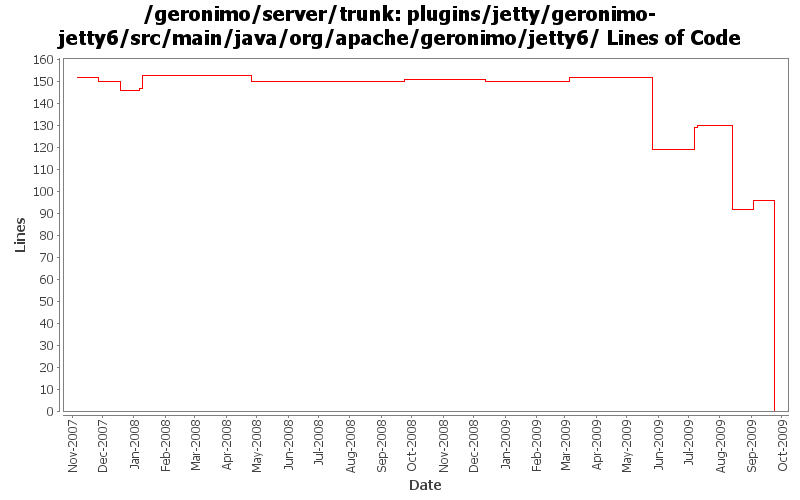

[root]/plugins/jetty/geronimo-jetty6/src/main/java/org/apache/geronimo/jetty6
 connector
(0 files, 0 lines)
connector
(0 files, 0 lines)
 handler
(0 files, 0 lines)
handler
(0 files, 0 lines)
 requestlog
(0 files, 0 lines)
requestlog
(0 files, 0 lines)

| Author | Changes | Lines of Code | Lines per Change |
|---|---|---|---|
| Totals | 73 (100.0%) | 131 (100.0%) | 1.7 |
| djencks | 27 (37.0%) | 96 (73.3%) | 3.5 |
| gawor | 7 (9.6%) | 15 (11.5%) | 2.1 |
| jdillon | 9 (12.3%) | 11 (8.4%) | 1.2 |
| genspring | 1 (1.4%) | 4 (3.1%) | 4.0 |
| akulshreshtha | 3 (4.1%) | 4 (3.1%) | 1.3 |
| jlaskowski | 1 (1.4%) | 1 (0.8%) | 1.0 |
| pmcmahan | 2 (2.7%) | 0 (0.0%) | 0.0 |
| jbohn | 1 (1.4%) | 0 (0.0%) | 0.0 |
| dwoods | 22 (30.1%) | 0 (0.0%) | 0.0 |
some pom cleanup and remove old jetty6 plugin files
0 lines of code changed in 20 files:
GERONIMO-4742 Connector portlets for Tomcat does not work
1, Added ConnectorWrapperGBeanStarter.java to start connector GBeans for connectors defined in server.xml.
2, Added TomcatServerConfigManager.java to use DOM to read/write connectors from server.xml.
3, Modified other classes to make this happen.
4 lines of code changed in 1 file:
GERONIMO-4645 use jacc ejb ws auth for jetty6, simplify SOAPHandler interface
51 lines of code changed in 2 files:
GERONIMO-4645 Make ejb ws security more jacc friendly, implement transport guarantees for jetty7 using jacc. See jira for more comments
2 lines of code changed in 1 file:
prefer openejb-jar.xml instead of geronimo-openejb.xml descriptor in ejb ws deployer and pass additional properties object to SoapHandlers
11 lines of code changed in 1 file:
GERONIMO-4553 Make web use of security realms depend on plugin visibility; make console expose the 'global' attribute for configuration (renamed from 'publish'). Also merges in geronimo-security changes from sandbox branches.
23 lines of code changed in 8 files:
GERONIMO-4577 upgrade jetty to 6.1.14. There are dependency problems I don't understand with 6.1.15, but this gets the api changes in.
0 lines of code changed in 2 files:
expose HttpServletRequest through jacc for ejb web services (GERONIMO-4572)
2 lines of code changed in 1 file:
support for specifying a list of http methods that should be secured for ejb-based web services (GERONIMO-4015)
2 lines of code changed in 3 files:
GERONIMO-4437 revert jetty 6.1.14 changes
0 lines of code changed in 1 file:
GERONIMO-4437 Upgrade to Jetty 6.1.14
0 lines of code changed in 2 files:
header fixes (Rev, Date)
1 lines of code changed in 1 file:
GERONIMO-4258 clean up some naming constant usage
7 lines of code changed in 2 files:
More loggers back to static
1 lines of code changed in 1 file:
More loggers back to static
2 lines of code changed in 2 files:
(GERONIMO-3985) Use SLF4J as the primary logging facade for Geronimo
8 lines of code changed in 6 files:
GERONIMO-3738 Expose new compactPath (or, expose security vulns) jetty parameter
6 lines of code changed in 1 file:
GERONIMO-3731 Provide common interface so filter mapping can get the servlet names
1 lines of code changed in 7 files:
GERONIMO-3712 Include ConnectionsCount statistics in TimeStatistics named ConnectionsDuration.
JettyWebContainer : Include RequestCount statistics in TimeStatistics named RequestDuration.
Remove RequestDurationAverage
4 lines of code changed in 1 file:
GERONIMO-3609 Better fix for supplying jndi on forwarded calls as well as for servlet listeners
6 lines of code changed in 1 file:
make JNDI available to filter.init() and filter.destroy() (GERONIMO-3671)
0 lines of code changed in 2 files:
GERONIMO-3609 Doh. Remove additinal duplication.
0 lines of code changed in 1 file:
GERONIMO-3609 Make sure x-context dispatch gets correct jndi context. Might possibly duplicate setting jndi context for in-context dispatch
0 lines of code changed in 2 files:
GERONIMO-3608 Move Jetty*Stats and Jetty*StatsImpl to geronimo-management
0 lines of code changed in 2 files:
GERONIMO-3523 increase the header buffer size to 8k for jetty connector and make the setting configurable
for new and existing jetty web connectors
0 lines of code changed in 2 files: